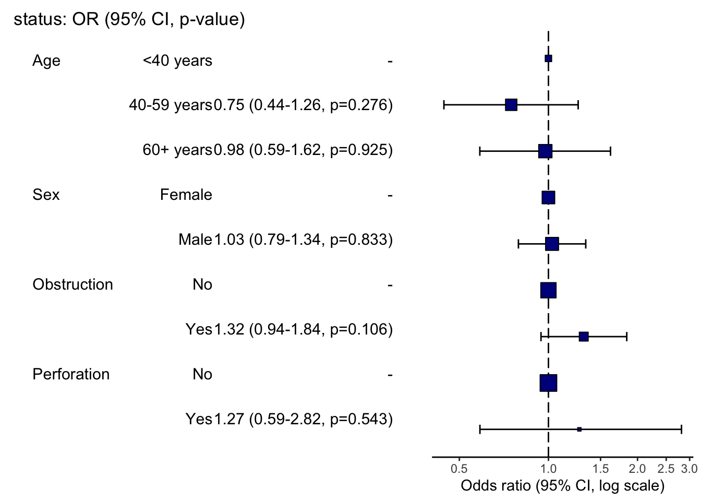
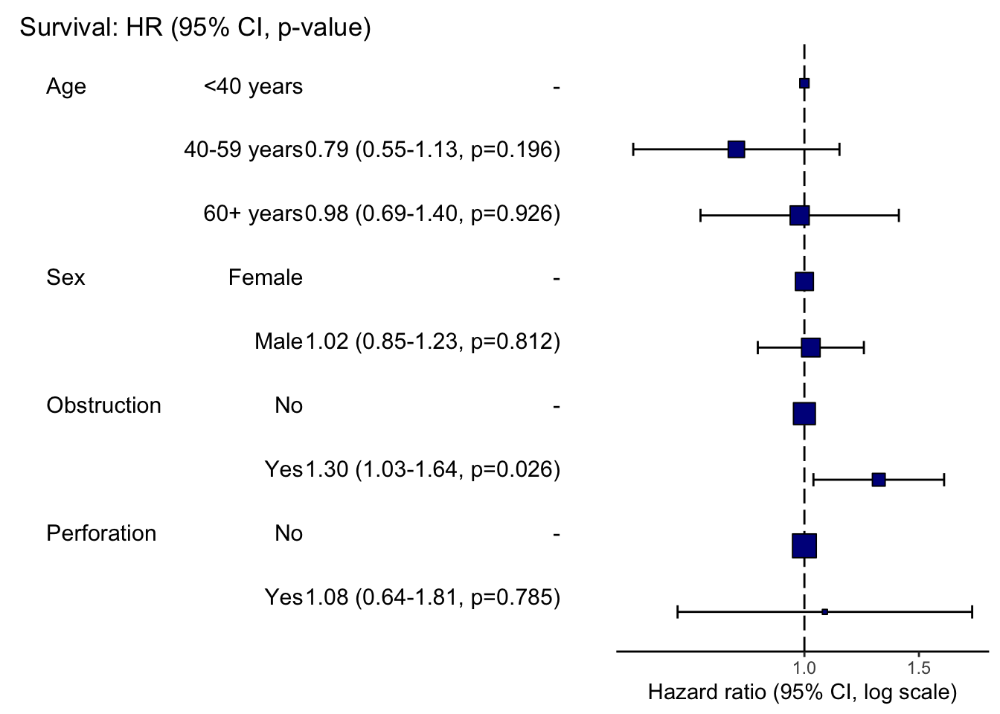

# install.packages("finalfit")
library(finalfit)데이터는 finalfit 패키지에 포함된 colon_s 데이터를 사용하겠습니다.
head(colon_s)테이블
요약 테이블
데이터의 기본 특성을 알려주는 요약 테이블은 summary_factorlist()를 이용합니다.
설명변수와 종속변수를 각각 인자에 넣어도 되고, ~을 이용해서 식 형태로 만들어줄 수 있습니다.
tbl1 = colon_s |>
summary_factorlist(
dependent = "perfor.factor",
explanatory = c("age", "age.factor", "sex.factor", "obstruct.factor"),
# OR formula = perfor.factor ~ age + age.factor + sex.factor + obstruct.factor,
p=TRUE,
add_dependent_label=TRUE,
total_col = TRUE)
knitr::kable(tbl1,
row.names=FALSE,
align=c("l", "l", "r", "r", "r"))| Dependent: Perforation | No | Yes | Total | p | |
|---|---|---|---|---|---|
| Age (years) | Mean (SD) | 59.8 (11.9) | 58.4 (13.3) | 59.8 (11.9) | 0.542 |
| Age | <40 years | 68 (7.5) | 2 (7.4) | 70 (7.5) | 1.000 |
| 40-59 years | 334 (37.0) | 10 (37.0) | 344 (37.0) | ||
| 60+ years | 500 (55.4) | 15 (55.6) | 515 (55.4) | ||
| Sex | Female | 432 (47.9) | 13 (48.1) | 445 (47.9) | 1.000 |
| Male | 470 (52.1) | 14 (51.9) | 484 (52.1) | ||
| Obstruction | No | 715 (81.2) | 17 (63.0) | 732 (80.6) | 0.035 |
| Yes | 166 (18.8) | 10 (37.0) | 176 (19.4) |
변수에 따른 Test 설정
범주형 변수의 경우는 p_cat을 이용해 chisq 또는 fisher를 선택할 수 있습니다.
연속형 변수의 경우, 기본적으로 kruskal.test가 적용됩니다. 다만 p_cont_para='t.test'를 적용하여 모수 분석로 가정한 p값을 산출할 수 있습니다.
tbl2 = colon_s |>
summary_factorlist(
dependent = "perfor.factor",
explanatory = c("age", "age.factor", "sex.factor", "obstruct.factor"),
p=TRUE,
p_cat = "fisher",
p_cont_para = 't.test',
add_dependent_label=TRUE,
total_col = TRUE)
knitr::kable(tbl2,
row.names=FALSE,
align=c("l", "l", "r", "r", "r"))| Dependent: Perforation | No | Yes | Total | p | |
|---|---|---|---|---|---|
| Age (years) | Mean (SD) | 59.8 (11.9) | 58.4 (13.3) | 59.8 (11.9) | 0.586 |
| Age | <40 years | 68 (7.5) | 2 (7.4) | 70 (7.5) | 1.000 |
| 40-59 years | 334 (37.0) | 10 (37.0) | 344 (37.0) | ||
| 60+ years | 500 (55.4) | 15 (55.6) | 515 (55.4) | ||
| Sex | Female | 432 (47.9) | 13 (48.1) | 445 (47.9) | 1.000 |
| Male | 470 (52.1) | 14 (51.9) | 484 (52.1) | ||
| Obstruction | No | 715 (81.2) | 17 (63.0) | 732 (80.6) | 0.026 |
| Yes | 166 (18.8) | 10 (37.0) | 176 (19.4) |
비모수 연속형 변수의 경우 cont='median'을 통해 mean(SD)가 아닌 Median(IQR)값으로 출력할 수 있습니다.
tbl3 = colon_s |>
summary_factorlist(
dependent = "perfor.factor",
explanatory = c("age", "nodes", "age.factor", "sex.factor", "obstruct.factor"),
p=TRUE,
cont = "median",
total_col = TRUE)
knitr::kable(tbl3,
row.names=FALSE,
align=c("l", "l", "r", "r", "r"))| label | levels | No | Yes | Total | p |
|---|---|---|---|---|---|
| Age (years) | Median (IQR) | 61.0 (53.0 to 69.0) | 60.0 (50.0 to 68.0) | 61.0 (53.0 to 69.0) | 0.578 |
| nodes | Median (IQR) | 2.0 (1.0 to 5.0) | 3.0 (2.0 to 4.0) | 2.0 (1.0 to 5.0) | 0.125 |
| Age | <40 years | 68 (7.5) | 2 (7.4) | 70 (7.5) | 1.000 |
| 40-59 years | 334 (37.0) | 10 (37.0) | 344 (37.0) | ||
| 60+ years | 500 (55.4) | 15 (55.6) | 515 (55.4) | ||
| Sex | Female | 432 (47.9) | 13 (48.1) | 445 (47.9) | 1.000 |
| Male | 470 (52.1) | 14 (51.9) | 484 (52.1) | ||
| Obstruction | No | 715 (81.2) | 17 (63.0) | 732 (80.6) | 0.035 |
| Yes | 166 (18.8) | 10 (37.0) | 176 (19.4) |
회귀 테이블
regression 테이블을 만들 때, univariable과 multivariable 테이블을 함께 만들어주는 것이 좋았습니다.
Logistic regression
앞선 요약 테이블과 마찬가지로, 설명변수와 종속변수를 각가 입력해주거나, formula 를 입력할 수 있습니다.
lr_tbl = colon_s |>
finalfit(explanatory = c("age.factor", "sex.factor", "obstruct.factor", "perfor.factor"),
dependent = 'mort_5yr')
knitr::kable(lr_tbl,
row.names=FALSE,
align=c("l", "l", "r", "r", "r", "r"))| Dependent: Mortality 5 year | Alive | Died | OR (univariable) | OR (multivariable) | |
|---|---|---|---|---|---|
| Age | <40 years | 31 (46.3) | 36 (53.7) | - | - |
| 40-59 years | 208 (61.4) | 131 (38.6) | 0.54 (0.32-0.92, p=0.023) | 0.57 (0.34-0.98, p=0.041) | |
| 60+ years | 272 (53.4) | 237 (46.6) | 0.75 (0.45-1.25, p=0.270) | 0.81 (0.48-1.36, p=0.426) | |
| Sex | Female | 243 (55.6) | 194 (44.4) | - | - |
| Male | 268 (56.1) | 210 (43.9) | 0.98 (0.76-1.27, p=0.889) | 0.98 (0.75-1.28, p=0.902) | |
| Obstruction | No | 408 (56.7) | 312 (43.3) | - | - |
| Yes | 89 (51.1) | 85 (48.9) | 1.25 (0.90-1.74, p=0.189) | 1.25 (0.90-1.76, p=0.186) | |
| Perforation | No | 497 (56.0) | 391 (44.0) | - | - |
| Yes | 14 (51.9) | 13 (48.1) | 1.18 (0.54-2.55, p=0.672) | 1.12 (0.51-2.44, p=0.770) |
일반적으로 다중(multivariable) 회귀분석은 단일(univariable) 회귀분석에서 유의한 변수(P<0.2)만 투입하기 마련이죠. finalfit()에서는 explanatory_multi 인자를 통해, multivariable regression에 포함시킬 변수를 선택할 수 있습니다.
lr_tbl2 = colon_s |>
finalfit(explanatory = c("age.factor", "sex.factor", "obstruct.factor", "perfor.factor"),
explanatory_multi = c("age.factor","obstruct.factor"),
dependent = 'mort_5yr')
knitr::kable(lr_tbl2,
row.names=FALSE,
align=c("l", "l", "r", "r", "r", "r"))| Dependent: Mortality 5 year | Alive | Died | OR (univariable) | OR (multivariable) | |
|---|---|---|---|---|---|
| Age | <40 years | 31 (46.3) | 36 (53.7) | - | - |
| 40-59 years | 208 (61.4) | 131 (38.6) | 0.54 (0.32-0.92, p=0.023) | 0.57 (0.34-0.98, p=0.041) | |
| 60+ years | 272 (53.4) | 237 (46.6) | 0.75 (0.45-1.25, p=0.270) | 0.81 (0.48-1.36, p=0.424) | |
| Sex | Female | 243 (55.6) | 194 (44.4) | - | - |
| Male | 268 (56.1) | 210 (43.9) | 0.98 (0.76-1.27, p=0.889) | - | |
| Obstruction | No | 408 (56.7) | 312 (43.3) | - | - |
| Yes | 89 (51.1) | 85 (48.9) | 1.25 (0.90-1.74, p=0.189) | 1.26 (0.90-1.76, p=0.176) | |
| Perforation | No | 497 (56.0) | 391 (44.0) | - | - |
| Yes | 14 (51.9) | 13 (48.1) | 1.18 (0.54-2.55, p=0.672) | - |
Cox regression
Cox 회귀분석을 위해서는, dependent 인자에 Surv()를 이용한 값을 넣어주면 됩니다.
cox_tbl = colon_s |>
finalfit(explanatory = c("age.factor", "sex.factor", "obstruct.factor", "perfor.factor"),
explanatory_multi = c("age.factor","obstruct.factor"),
dependent = "Surv(time, status)")
knitr::kable(cox_tbl,
row.names=FALSE,
align=c("l", "l", "r", "r", "r", "r"))| Dependent: Surv(time, status) | all | HR (univariable) | HR (multivariable) | |
|---|---|---|---|---|
| Age | <40 years | 70 (7.5) | - | - |
| 40-59 years | 344 (37.0) | 0.76 (0.53-1.09, p=0.132) | 0.79 (0.55-1.14, p=0.203) | |
| 60+ years | 515 (55.4) | 0.93 (0.66-1.31, p=0.668) | 0.99 (0.70-1.40, p=0.943) | |
| Sex | Female | 445 (47.9) | - | - |
| Male | 484 (52.1) | 1.01 (0.84-1.22, p=0.888) | - | |
| Obstruction | No | 732 (80.6) | - | - |
| Yes | 176 (19.4) | 1.29 (1.03-1.62, p=0.028) | 1.31 (1.04-1.64, p=0.022) | |
| Perforation | No | 902 (97.1) | - | - |
| Yes | 27 (2.9) | 1.17 (0.70-1.95, p=0.556) | - |
그래프
OR 그래프나 HR 그래프를 손쉽게 그릴 수 있습니다.
colon_s |>
or_plot(dependent = "status",
explanatory = c("age.factor","sex.factor","obstruct.factor","perfor.factor"))
colon_s |>
hr_plot(dependent = "Surv(time, status)",
explanatory = c("age.factor","sex.factor","obstruct.factor","perfor.factor"))
개인적으로 moonBook 패키지의 ORplot(), survminer 패키지의 ggforest()보다 더 깔끔하게 표현되어 더 좋은 것 같습니다.
레퍼런스 finalfit vignette